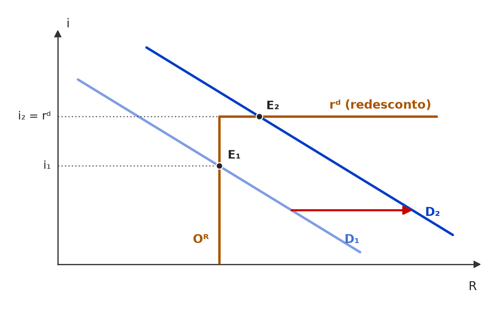
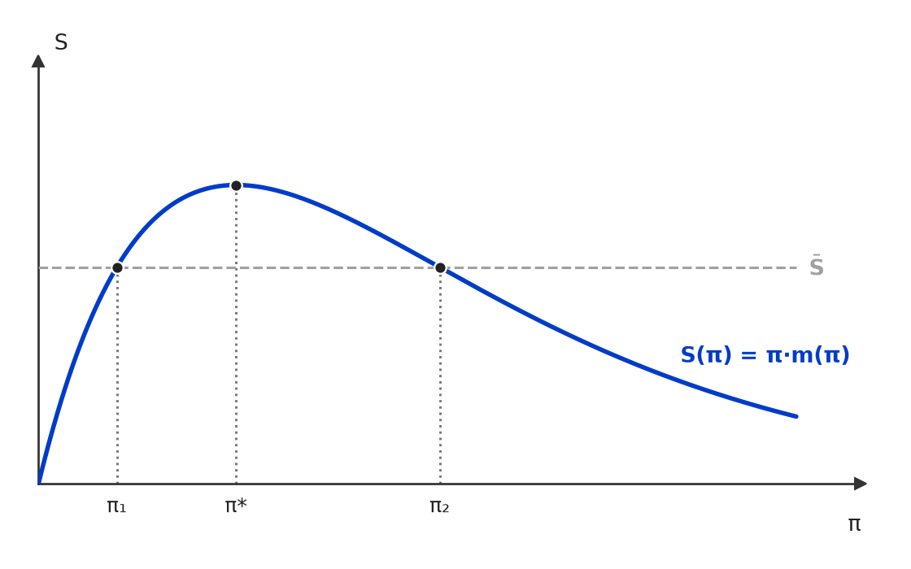

[C/E - IDEG – Prof. Bozan › Pré-TPS/2026 › Funções do Banco Central]Com base na estrutura e no funcionamento dos mercados monetários, julgue o item a seguir. Item: O Banco Central do Brasil atua como banco dos bancos e é responsável por emitir a moeda nacional, sendo o principal emissor da base monetária. Essa base monetária é composta pelo papel-moeda em poder do público e pelo encaixe bancário. | ✅ CERTO O Banco Central do Brasil atua como banco dos bancos e é responsável por emitir a moeda nacional, sendo o principal emissor da base monetária. Essa base monetária é composta pelo papel-moeda em poder do público e pelo encaixe bancário. 🎯 Em poucas palavras: As duas partes estão certas: o BCB é banco dos bancos e emissor da moeda, e a base monetária = PMPP + encaixes dos bancos. 📖 Destrinchando o tema:
🧐 Dissecando a redação do item: [literalidade · detalhe] Reproduz a definição de manual. O risco é o candidato confundir base com M1 e achar que faltam os depósitos à vista, ou estranhar o “principal” (impreciso, mas não falso). 🔥 A banca alterna “encaixes” e “depósitos à vista” para fabricar o ERRADO. 😈 Para dificultar:
|
[C/E - Nabuco › Funções do Banco Central]A respeito de moeda e política monetária, julgue (C ou E) o item seguinte. Item: O Conselho Monetário Nacional define periodicamente, por meio de seu Comitê de Política Monetária (COPOM), o valor da taxa básica de juros da economia — taxa SELIC. | ❌ ERRADO O Conselho Monetário Nacional define periodicamente, por meio de seu Comitê de Política Monetária (COPOM), o valor da taxa básica de juros da economia — taxa SELIC. 🎯 Em poucas palavras: O Copom é órgão do Banco Central do Brasil, não do CMN. O CMN fixa a meta de inflação; o Copom/BCB fixa a meta da Selic para cumpri-la. 📖 Destrinchando o tema:
🧐 Dissecando a redação do item: [troca de ator] O item mantém tudo certo (Copom, periodicidade, Selic como taxa básica) e troca só o órgão a que o Copom pertence. O “seu” é a armadilha: soa natural e faz o candidato aceitar a subordinação ao CMN. 😈 Para dificultar:
✍️ Reescrita correta: O Banco Central do Brasil define periodicamente, por meio de seu Comitê de Política Monetária (COPOM), o valor da taxa básica de juros da economia — taxa SELIC. |
[C/E - Nidi/Jacqueline Bueno › Simulado Julho/2025 › Funções do Banco Central]A respeito do Banco Central e suas atribuições enquanto gestor da política monetária, julgue certo ou errado o item a seguir. Item: Os Bancos Centrais exercem quatro funções consideradas típicas: emissor de papel-moeda, banqueiro do Tesouro Nacional, banqueiro dos bancos comerciais e depositário das reservas internacionais. Além dessas atribuições, sua principal função operacional é assegurar a estabilidade de preços, por meio da implementação de estratégias de política monetária. | ✅ CERTO Os Bancos Centrais exercem quatro funções consideradas típicas: emissor de papel-moeda, banqueiro do Tesouro Nacional, banqueiro dos bancos comerciais e depositário das reservas internacionais. Além dessas atribuições, sua principal função operacional é assegurar a estabilidade de preços, por meio da implementação de estratégias de política monetária. 🎯 Em poucas palavras: As quatro funções clássicas estão certas (emissor, banco do governo, banco dos bancos, depositário das reservas), e a estabilidade de preços é o objetivo central da política monetária moderna. 📖 Destrinchando o tema:
🧐 Dissecando a redação do item: [literalidade · detalhe] Lista de funções reproduzida corretamente. A banca costuma fabricar o ERRADO trocando uma função (ex.: “banqueiro das empresas”, “emissor de títulos do Tesouro”) ou atribuindo ao BC a gestão fiscal. 😈 Para dificultar:
|
[C/E - Nidi/Jacqueline Bueno › Simulado Dezembro/2024 › Funções do Banco Central]No que concerne à política monetária, seu papel, seus instrumentos e agentes, julgue (C ou E) o item a seguir. Item: O Banco Central é o único agente no Sistema Monetário Nacional Brasileiro atual que emite papel-moeda. | ✅ CERTO O Banco Central é o único agente no Sistema Monetário Nacional Brasileiro atual que emite papel-moeda. 🎯 Em poucas palavras: A emissão de moeda é monopólio do BCB (CF, art. 164). Bancos comerciais criam moeda escritural, não papel-moeda; a Casa da Moeda só fabrica. 📖 Destrinchando o tema:
🧐 Dissecando a redação do item: [literalidade · detalhe] O “único” costuma sinalizar ERRADO, mas aqui é exato (monopólio constitucional). A armadilha é confundir emissão com fabricação (Casa da Moeda) ou com criação de moeda escritural (bancos). 😈 Para dificultar:
|
[C/E - Prof. Rodrigo Teixeira › Intensivo Pré-TPS/2023 › Funções do Banco Central]A respeito do papel do Banco Central e da teoria monetária, julgue o item a seguir. Item: O Banco Central é responsável por conduzir a política monetária de forma a preservar o poder de compra da moeda, de acordo com as metas de inflação definidas pelo Conselho Monetário Nacional. | ✅ CERTO O Banco Central é responsável por conduzir a política monetária de forma a preservar o poder de compra da moeda, de acordo com as metas de inflação definidas pelo Conselho Monetário Nacional. 🎯 Em poucas palavras: É o arranjo do regime de metas: o CMN fixa a meta de inflação; o BCB conduz a política monetária para cumpri-la. Estabilidade de preços = preservar o poder de compra. 📖 Destrinchando o tema:
🧐 Dissecando a redação do item: [literalidade] Descreve corretamente quem faz o quê. As trocas típicas que a banca faria: atribuir a meta ao próprio BC ou ao Copom, ou dizer que o CMN conduz a política monetária. ⚖️ Base normativa:
😈 Para dificultar:
|
[C/E - Prof. Rodrigo Teixeira › Intensivo Pré-TPS/2023 › Funções do Banco Central]A respeito do papel do Banco Central e da teoria monetária, julgue o item a seguir. Item: A defesa de um banco central autônomo está ligada à ideia da credibilidade e estabilidade da política monetária, independente de qual seja o governo eleito. | ✅ CERTO A defesa de um banco central autônomo está ligada à ideia da credibilidade e estabilidade da política monetária, independente de qual seja o governo eleito. 🎯 Em poucas palavras: O argumento central da autonomia é a credibilidade: blindar a política monetária do ciclo eleitoral reduz o viés inflacionário e ancora expectativas. 📖 Destrinchando o tema:
🧐 Dissecando a redação do item: [literalidade] Paráfrase da justificativa padrão. A banca poderia tornar o item falso trocando o fundamento (ex.: “ligada à necessidade de financiar o Tesouro”) ou afirmando que autonomia elimina a coordenação com a política fiscal. 📚 Autores e teses:
😈 Para dificultar:
|
[C/E - Banca não identificada › Funções do Banco Central]Julgue o item a seguir, relativo às funções do Banco Central do Brasil. Item: Ao Banco Central do Brasil cabe decidir a meta para a inflação, as diretrizes para o câmbio e as normas principais para o funcionamento das instituições financeiras, entre outras atribuições. | ❌ ERRADO Ao Banco Central do Brasil cabe decidir a meta para a inflação, as diretrizes para o câmbio e as normas principais para o funcionamento das instituições financeiras, entre outras atribuições. 🎯 Em poucas palavras: Quem decide é o Conselho Monetário Nacional (CMN), órgão normativo; o BCB executa e supervisiona. 📖 Destrinchando o tema:
🧐 Dissecando a redação do item: [troca de ator] Copia a frase oficial que descreve o CMN e põe o BCB como sujeito. Pista: o verbo “decidir” (normativo) × “executar/fiscalizar” (BCB). 🔥 Tema recorrente: CMN fixa a meta, BCB persegue. 😈 Para dificultar:
✍️ Reescrita correta: Ao Conselho Monetário Nacional cabe decidir a meta para a inflação, as diretrizes para o câmbio e as normas principais para o funcionamento das instituições financeiras, entre outras atribuições. |
[C/E - Banca não identificada › Funções do Banco Central]Julgue o item a seguir, relativo às funções dos bancos centrais. Item: Como guardião da moeda, o banco central de um país é a instituição à qual se confia o dever de regular o volume de dinheiro e de crédito da economia. Em que pesem as diferenças entre bancos centrais, essa atribuição geralmente está associada ao objetivo de assegurar a estabilidade do poder de compra da moeda nacional. | ✅ CERTO Como guardião da moeda, o banco central de um país é a instituição à qual se confia o dever de regular o volume de dinheiro e de crédito da economia. Em que pesem as diferenças entre bancos centrais, essa atribuição geralmente está associada ao objetivo de assegurar a estabilidade do poder de compra da moeda nacional. 🎯 Em poucas palavras: É a definição do próprio BCB: o banco central regula moeda e crédito, em geral com o objetivo de estabilidade de preços (poder de compra da moeda). 📖 Destrinchando o tema:
🧐 Dissecando a redação do item: [literalidade · modulador relativo] Texto institucional, protegido por “geralmente” e “em que pesem as diferenças”. Desconfiança indevida pode vir do mandato dual do Fed; o item não diz que estabilidade de preços é o objetivo único. 😈 Para dificultar:
|
[C/E - Banca não identificada › Funções do Banco Central]Julgue o item a seguir, relativo às funções do Banco Central do Brasil. Item: O Banco Central do Brasil é a instituição do país que desempenha as funções de monopólio de emissão, banqueiro do governo, banco dos bancos, supervisor do sistema financeiro e executor da política monetária. A formulação da política cambial e a responsabilidade pela administração das reservas internacionais ficam a cargo do Ministério da Fazenda. | ❌ ERRADO O Banco Central do Brasil é a instituição do país que desempenha as funções de monopólio de emissão, banqueiro do governo, banco dos bancos, supervisor do sistema financeiro e executor da política monetária. A formulação da política cambial e a responsabilidade pela administração das reservas internacionais ficam a cargo do Ministério da Fazenda. 🎯 Em poucas palavras: A 1ª frase está certa; a 2ª, não: formular e executar a política cambial e administrar as reservas internacionais são competências do BCB, e não do Ministério da Fazenda. 📖 Destrinchando o tema:
🧐 Dissecando a redação do item: [troca de ator · meia-verdade] A 1ª frase, longa e correta, dá confiança; o erro está no ator da 2ª. Pista: política cambial e reservas andam juntas — quem intervém no câmbio usa as reservas, e quem as usa é o BC. 😈 Para dificultar:
✍️ Reescrita correta: O Banco Central do Brasil é a instituição do país que desempenha as funções de monopólio de emissão, banqueiro do governo, banco dos bancos, supervisor do sistema financeiro e executor da política monetária. A formulação da política cambial e a responsabilidade pela administração das reservas internacionais ficam a cargo do próprio Banco Central do Brasil. |
[C/E - Banca não identificada › Funções do Banco Central]Com relação ao conceito de meios de pagamento (M1), que corresponde ao estoque de moeda disponível para uso da coletividade, julgue o item a seguir. Item: As emissões de papel moeda pelo Tesouro Nacional são instrumento de política monetária à disposição do Ministério da Fazenda. | ❌ ERRADO As emissões de papel moeda pelo Tesouro Nacional são instrumento de política monetária à disposição do Ministério da Fazenda. 🎯 Em poucas palavras: A emissão de moeda é competência exclusiva do Banco Central (CF, art. 164); o Tesouro e o Ministério da Fazenda não emitem papel-moeda. 📖 Destrinchando o tema:
🧐 Dissecando a redação do item: [troca de ator] Troca o emissor (BC → Tesouro) e o titular do instrumento (autoridade monetária → Ministério da Fazenda). Pista: no Brasil, quem emite moeda é só o BC, por mandamento constitucional. 😈 Para dificultar:
✍️ Reescrita correta: As emissões de papel moeda pelo Banco Central do Brasil são instrumento de política monetária à disposição da autoridade monetária. |
[C/E - CEBRASPE › TJ/PA/2025 › Instrumentos de política monetária]Julgue o item que se segue, a respeito das políticas fiscal e monetária, do papel da dívida pública como fonte de financiamento e da função reguladora do Estado na economia. Item: Um dos objetivos primários do Banco Central do Brasil é o controle da inflação, sendo a taxa Selic utilizada como principal instrumento de política monetária. | ✅ CERTO Um dos objetivos primários do Banco Central do Brasil é o controle da inflação, sendo a taxa Selic utilizada como principal instrumento de política monetária. 🎯 Em poucas palavras: No regime de metas de inflação (desde 1999), a estabilidade de preços é o objetivo fundamental do BCB e a meta da Selic, definida pelo Copom, é o instrumento principal. 📖 Destrinchando o tema:
🧐 Dissecando a redação do item: [literalidade] Item de enunciado institucional. O risco é o candidato implicar com “principal” (há outros instrumentos) ou com “um dos objetivos” (há objetivo fundamental). Ambos estão corretos: a Selic é o instrumento principal e o controle da inflação é objetivo primário. 😈 Para dificultar:
|
[C/E - CEBRASPE › ANTT/2023 › Instrumentos de política monetária]Julgue o item que se segue, relativo à economia monetária. Item: Uma operação de mercado aberto, na qual a autoridade monetária vende títulos públicos de sua carteira, implica na expansão da base monetária. | ❌ ERRADO Uma operação de mercado aberto, na qual a autoridade monetária vende títulos públicos de sua carteira, implica na expansão da base monetária. 🎯 Em poucas palavras: Quem compra o título do BC paga com moeda, que sai de circulação: a venda de títulos contrai a base monetária. Expansão ocorre na compra. 📖 Destrinchando o tema:
🧐 Dissecando a redação do item: [inversão] Troca o efeito da operação descrita corretamente. Para resolver: siga o dinheiro — na venda, ele vai do mercado para o BC (sai de circulação). 😈 Para dificultar:
✍️ Reescrita correta: Uma operação de mercado aberto, na qual a autoridade monetária vende títulos públicos de sua carteira, implica na contração da base monetária. |
[C/E - Clipping › Simuladão Março/2026 › Instrumentos de política monetária]Julgue o item a seguir, relativo aos instrumentos de política monetária. Item: Uma política monetária expansionista conduzida por um banco central consiste em aumentar a base monetária e elevar a taxa de juros simultaneamente, visando estimular o investimento privado e o consumo agregado. | ❌ ERRADO Uma política monetária expansionista conduzida por um banco central consiste em aumentar a base monetária e elevar a taxa de juros simultaneamente, visando estimular o investimento privado e o consumo agregado. 🎯 Em poucas palavras: Expandir a moeda e reduzir os juros são as duas faces do mesmo movimento: mais liquidez barateia o dinheiro. Juros em alta são marca da política contracionista. 📖 Destrinchando o tema:
🧐 Dissecando a redação do item: [meia-verdade · contradição] Começa certo (aumentar a base) e termina certo (estimular investimento e consumo); o erro foi enxertado no meio, num verbo que contradiz as outras duas partes. Pista: juros altos não estimulam investimento. 😈 Para dificultar:
✍️ Reescrita correta: Uma política monetária expansionista conduzida por um banco central consiste em aumentar a base monetária e reduzir a taxa de juros simultaneamente, visando estimular o investimento privado e o consumo agregado. |
[C/E - Clipping › Simuladão Março/2026 › Instrumentos de política monetária]Julgue o item a seguir, relativo aos instrumentos de política monetária. Item: A redução da taxa de redesconto do banco central encarece o crédito bancário para o setor privado, caracterizando uma medida expansionista. | ❌ ERRADO A redução da taxa de redesconto do banco central encarece o crédito bancário para o setor privado, caracterizando uma medida expansionista. 🎯 Em poucas palavras: Redesconto mais barato reduz o custo de captação dos bancos e tende a baratear o crédito ao setor privado — por isso a medida é expansionista. 📖 Destrinchando o tema:
🧐 Dissecando a redação do item: [contradição] O item fecha com a classificação certa (“expansionista”) e contradiz a si mesmo no efeito (“encarece”). Medida que encarece o crédito não pode ser expansionista: basta checar a coerência interna. 😈 Para dificultar:
✍️ Reescrita correta: A redução da taxa de redesconto do banco central barateia o crédito bancário para o setor privado, caracterizando uma medida expansionista. |
[C/E - IDEG – Prof. Bozan › Pré-TPS/2026 › Instrumentos de política monetária]Com base na estrutura e no funcionamento dos mercados monetários, julgue o item a seguir. Item: A política de redesconto é uma ferramenta utilizada pelo Banco Central para influenciar as taxas de juros no mercado, facilitando empréstimos a bancos comerciais a uma taxa de redesconto. Entretanto, diferentemente de modificar a taxa de compulsório, alterar a taxa de redesconto altera juros, mas não impacta fortemente no comportamento da economia monetária. | ❌ ERRADO A política de redesconto é uma ferramenta utilizada pelo Banco Central para influenciar as taxas de juros no mercado, facilitando empréstimos a bancos comerciais a uma taxa de redesconto. Entretanto, diferentemente de modificar a taxa de compulsório, alterar a taxa de redesconto altera juros, mas não impacta fortemente no comportamento da economia monetária. 🎯 Em poucas palavras: O redesconto é um dos três instrumentos clássicos de controle da oferta de moeda: como o compulsório, ele mexe na liquidez e no crédito, e não só “nos juros”. 📖 Destrinchando o tema:
🧐 Dissecando a redação do item: [meia-verdade · juízo indevido] A 1ª frase é definição correta; o “Entretanto” abre o enxerto falso, que cria uma hierarquia (“não impacta fortemente”) e uma oposição com o compulsório que os manuais não fazem. Desconfie de “diferentemente de” entre instrumentos que têm o mesmo efeito de fundo. 😈 Para dificultar:
✍️ Reescrita correta: A política de redesconto é uma ferramenta utilizada pelo Banco Central para influenciar as taxas de juros no mercado, facilitando empréstimos a bancos comerciais a uma taxa de redesconto. Assim como modificar a taxa de compulsório, alterar a taxa de redesconto altera juros, e também impacta no comportamento da economia monetária. |
[C/E - Armstrong › Pré-TPS/2026 › Instrumentos de política monetária]Julgue o item a seguir, relativo aos canais de transmissão da política monetária. Item: O canal do crédito da política monetária sugere que a taxa de juros básica afeta a economia não apenas pelo custo do capital, mas também pela disponibilidade de empréstimos. Uma elevação da Selic piora os balanços das empresas e bancos (efeito balanço), aumentando a assimetria de informação e o prêmio de risco, o que amplifica o efeito contracionista da política monetária sobre o investimento. | ✅ CERTO O canal do crédito da política monetária sugere que a taxa de juros básica afeta a economia não apenas pelo custo do capital, mas também pela disponibilidade de empréstimos. Uma elevação da Selic piora os balanços das empresas e bancos (efeito balanço), aumentando a assimetria de informação e o prêmio de risco, o que amplifica o efeito contracionista da política monetária sobre o investimento. 🎯 Em poucas palavras: É a tese do canal do crédito / acelerador financeiro: juros altos deterioram balanços e garantias, encarecem e racionam o crédito e assim amplificam o aperto monetário. 📖 Destrinchando o tema:
🧐 Dissecando a redação do item: [paráfrase fiel · detalhe] Reproduz a teoria com vocabulário técnico denso (“efeito balanço”, “prêmio de risco”), que intimida. A palavra-chave é “amplifica”: o canal do crédito não substitui o dos juros, soma-se a ele. 😈 Para dificultar:
|
[C/E - Nabuco › Instrumentos de política monetária]A respeito de moeda e política monetária, julgue (C ou E) o item seguinte. Item: Ao comprar notas do Tesouro Nacional (NTN) do mercado, o Banco Central aumenta a oferta de moeda. | ✅ CERTO Ao comprar notas do Tesouro Nacional (NTN) do mercado, o Banco Central aumenta a oferta de moeda. 🎯 Em poucas palavras: Comprar títulos no mercado aberto é pagar com moeda nova: o BC credita reservas aos vendedores, a base monetária cresce e, pelo multiplicador, a oferta de moeda também. 📖 Destrinchando o tema:
🧐 Dissecando a redação do item: [literalidade] Item direto: verbo “comprar” + efeito “aumenta”. A sigla NTN serve de distração — o examinador aposta que o candidato hesite por não conhecer o título. Só o sentido da operação importa. 😈 Para dificultar:
|
[C/E - Nidi/Jacqueline Bueno › Fevereiro/2026 › Instrumentos de política monetária]Sobre os instrumentos de política monetária e o papel do Banco Central do Brasil, julgue o item a seguir. Item: Se os bancos comerciais têm acesso irrestrito à janela de redesconto do Banco Central, a taxa de redesconto estabelece um limite máximo à taxa de juros do mercado de reservas bancárias. | ✅ CERTO Se os bancos comerciais têm acesso irrestrito à janela de redesconto do Banco Central, a taxa de redesconto estabelece um limite máximo à taxa de juros do mercado de reservas bancárias. 🎯 Em poucas palavras: É arbitragem: se qualquer banco pode tomar no BC quanto quiser à taxa de redesconto, nenhum pagará mais do que isso a outro banco. O redesconto vira o teto da taxa interbancária. 📖 Destrinchando o tema:
📈 No gráfico:  A oferta de reservas é vertical na quantidade que o BC provê e vira horizontal na taxa de redesconto (rᵈ), porque ali o BC empresta quanto se pedir. Se a demanda por reservas sobe de D₁ para D₂, a taxa do mercado sobe de i₁ até rᵈ e para: o redesconto é o teto. 🧐 Dissecando a redação do item: [detalhe · literalidade] O item é a definição de manual, protegida pela condicional “se … acesso irrestrito”. O risco é confundir teto com piso: quem pensa “o BC cobra caro no redesconto, então os juros de mercado ficam acima” marca ERRADO. 😈 Para dificultar:
|
❌ [C/E - Nidi/Jacqueline Bueno › Fevereiro/2026 › Instrumentos de política monetária]Sobre os instrumentos de política monetária e o papel do Banco Central do Brasil, julgue o item a seguir. Item: Uma operação de mercado aberto, na qual o Banco Central compra títulos da dívida e emite moeda, aumenta os ativos e os passivos do balancete do Banco Central no mesmo montante. | ✅ CERTO Uma operação de mercado aberto, na qual o Banco Central compra títulos da dívida e emite moeda, aumenta os ativos e os passivos do balancete do Banco Central no mesmo montante. 🎯 Em poucas palavras: Partidas dobradas: o título comprado entra no ativo pelo preço pago, e a moeda emitida para pagá-lo entra no passivo monetário (base monetária) pelo mesmo valor. 📖 Destrinchando o tema:
🧐 Dissecando a redação do item: [literalidade · contraintuitivo] O item é contabilidade de manual. A armadilha é a de quem pensa em valor futuro do título ou acha que “emitir moeda” não cria passivo (cria: a moeda é dívida monetária do BC). “No mesmo montante” é a palavra-chave, e está certa. 😈 Para dificultar:
|
[C/E - Clipping › Simuladão Julho/2025 › Instrumentos de política monetária]A política monetária moderna combina instrumentos de controle da oferta de moeda com metas de inflação, buscando estabilidade econômica. Com base nesse contexto, julgue os itens a seguir. Item: O controle da base monetária pelo Banco Central é realizado exclusivamente por meio da fixação da taxa de juros de referência. | ❌ ERRADO O controle da base monetária pelo Banco Central é realizado exclusivamente por meio da fixação da taxa de juros de referência. 🎯 Em poucas palavras: O BC dispõe de um conjunto de instrumentos — mercado aberto, compulsório, redesconto — além da taxa básica; o “exclusivamente” derruba o item. 📖 Destrinchando o tema:
🧐 Dissecando a redação do item: [modulador absoluto] A taxa de juros é, de fato, o principal instrumento moderno; o erro está no “exclusivamente”, que apaga os demais. 🔥 Em itens sobre instrumentos, desconfie de “exclusivamente”, “apenas” e “somente”. 😈 Para dificultar:
✍️ Reescrita correta: O controle da base monetária pelo Banco Central é realizado por um conjunto de instrumentos — operações de mercado aberto, recolhimentos compulsórios e redesconto —, ao lado da fixação da taxa de juros de referência. |
[C/E - Clipping › Simuladão Julho/2025 › Instrumentos de política monetária]A política monetária moderna combina instrumentos de controle da oferta de moeda com metas de inflação, buscando estabilidade econômica. Com base nesse contexto, julgue os itens a seguir. Item: O canal do crédito na transmissão da política monetária torna-se mais relevante quando as instituições financeiras operam com alta liquidez e baixo risco de inadimplência. | ✅ CERTO O canal do crédito na transmissão da política monetária torna-se mais relevante quando as instituições financeiras operam com alta liquidez e baixo risco de inadimplência. 🎯 Em poucas palavras: Bancos líquidos e confiantes nos tomadores repassam a política monetária ao volume de crédito com mais facilidade: o canal do crédito ganha força. 📖 Destrinchando o tema:
🧐 Dissecando a redação do item: [paráfrase fiel · modulador relativo] Afirmação comparativa (“mais relevante”), não absoluta. A dúvida possível é achar que bancos líquidos “não precisam” da política; é o contrário: são eles que conseguem transformá-la em crédito. 😈 Para dificultar:
|
[C/E - Nidi/Jacqueline Bueno › Simulado Julho/2025 › Instrumentos de política monetária]A respeito do Banco Central e suas atribuições enquanto gestor da política monetária, julgue certo ou errado o item a seguir. Item: Uma operação de mercado aberto, na qual o Banco Central compra títulos da dívida e emite moeda, aumenta os ativos e os passivos do balancete do Banco Central no mesmo montante. | ✅ CERTO Uma operação de mercado aberto, na qual o Banco Central compra títulos da dívida e emite moeda, aumenta os ativos e os passivos do balancete do Banco Central no mesmo montante. 🎯 Em poucas palavras: Partidas dobradas: o título entra no ativo; a moeda criada para pagá-lo (reservas bancárias ou papel-moeda) é passivo monetário. O balancete cresce dos dois lados, no mesmo valor. 📖 Destrinchando o tema:
🧐 Dissecando a redação do item: [detalhe · contraintuitivo] O senso comum imagina que o BC “gasta” algo para comprar o título (ativo troca por ativo, balanço do mesmo tamanho). O item cobra a lógica contábil da emissão: moeda é passivo do BC, então o balanço expande. 😈 Para dificultar:
|
[C/E - Nidi/Jacqueline Bueno › Simulado Junho/2025 › Instrumentos de política monetária]Julgue certo ou errado o item a seguir, acerca das políticas monetárias típicas conduzidas pelos bancos centrais e, em particular, o BCB. Item: Uma compra de títulos públicos pelo Banco Central no mercado aberto causa um aumento da base monetária. | ✅ CERTO Uma compra de títulos públicos pelo Banco Central no mercado aberto causa um aumento da base monetária. 🎯 Em poucas palavras: Ao comprar títulos, o BC entrega reservas bancárias aos vendedores: o passivo monetário do BC — a base monetária — cresce. É a operação expansionista típica. 📖 Destrinchando o tema:
🧐 Dissecando a redação do item: [literalidade] Relação direta operação → agregado. A dúvida que o examinador explora é confundir base com M1 ou achar que a reserva “parada no BC” não conta — mas reserva bancária é justamente parte da base. 😈 Para dificultar:
|
[C/E - Nidi/Jacqueline Bueno › Simulado Junho/2025 › Instrumentos de política monetária]Julgue certo ou errado o item a seguir, acerca das políticas monetárias típicas conduzidas pelos bancos centrais e, em particular, o BCB. Item: As operações de mercado aberto objetivam primordialmente contribuir para a aproximação entre a taxa de juros do mercado de reservas bancárias e a taxa básica de juros anunciada pelas autoridades monetárias, evitando que excesso ou falta de liquidez afaste a taxa básica anunciada da taxa de mercado. | ✅ CERTO As operações de mercado aberto objetivam primordialmente contribuir para a aproximação entre a taxa de juros do mercado de reservas bancárias e a taxa básica de juros anunciada pelas autoridades monetárias, evitando que excesso ou falta de liquidez afaste a taxa básica anunciada da taxa de mercado. 🎯 Em poucas palavras: Num regime de meta para a taxa de juros, o open market serve para a Selic efetiva (mercado de reservas) colar na meta da Selic anunciada pelo Copom: o BC enxuga ou injeta liquidez diariamente. 📖 Destrinchando o tema:
🧐 Dissecando a redação do item: [paráfrase fiel · detalhe] Descreve o objetivo operacional moderno. O “primordialmente” assusta quem decorou “open market controla a base monetária”; mas, com meta de juros, o controle da liquidez é o meio e a taxa é o alvo. 😈 Para dificultar:
|
[C/E - Nabuco › Pré-TPS/2024 › Instrumentos de política monetária]Em relação à teoria monetária, julgue (C ou E) o item a seguir. Item: Os depósitos voluntários remunerados são um novo instrumento de política monetária do Banco Central do Brasil (BACEN) e contribuem para a gestão de liquidez na economia, sem gerar os efeitos sobre a dívida bruta do governo federal que se observam quando da utilização de operações compromissadas com títulos públicos. | ✅ CERTO Os depósitos voluntários remunerados são um novo instrumento de política monetária do Banco Central do Brasil (BACEN) e contribuem para a gestão de liquidez na economia, sem gerar os efeitos sobre a dívida bruta do governo federal que se observam quando da utilização de operações compromissadas com títulos públicos. 🎯 Em poucas palavras: Desde a Lei 14.185/2021, o BCB pode acolher depósitos voluntários remunerados dos bancos: enxugam liquidez como as compromissadas, mas não entram na dívida bruta. 📖 Destrinchando o tema:
🧐 Dissecando a redação do item: [detalhe · literalidade] Item de atualidade institucional: exige saber que o instrumento existe (2021) e por que foi criado. A trava é o “sem gerar os efeitos sobre a dívida bruta” — que é exatamente a justificativa do projeto. ⚖️ Base normativa:
😈 Para dificultar:
|
❌ [C/E - Nidi/Jacqueline Bueno › Simulado Dezembro/2024 › Instrumentos de política monetária]No que concerne à política monetária, seu papel, seus instrumentos e agentes, julgue (C ou E) o item a seguir. Item: O redesconto refere-se ao processo de reemissão de um título da dívida pública que é comprado por um banco comercial, o qual detinha o título original, mas por um preço descontado. | ❌ ERRADO O redesconto refere-se ao processo de reemissão de um título da dívida pública que é comprado por um banco comercial, o qual detinha o título original, mas por um preço descontado. 🎯 Em poucas palavras: Redesconto não é reemissão de título: é empréstimo de liquidez do Banco Central aos bancos, com títulos dados em garantia, cobrado à taxa de redesconto. 📖 Destrinchando o tema:
🧐 Dissecando a redação do item: [troca de conceito] A banca explora o nome: “re-desconto” sugere “emitir de novo com desconto”. O conceito real é de crédito, não de título. Pista: o item não menciona o Banco Central, que é parte indispensável da operação. 😈 Para dificultar:
✍️ Reescrita correta: O redesconto refere-se à operação pela qual o Banco Central concede empréstimos de liquidez a um banco comercial, mediante garantia em títulos de sua carteira. |
❌ [C/E - Nidi/Jacqueline Bueno › Outubro/2024 › Instrumentos de política monetária]A respeito dos efeitos que alterações na política monetária ou a flutuação do mercado cambial produzem sobre a base monetária e a liquidez do sistema financeiro nacional, julgue certo ou errado (C ou E) os itens a seguir. Item: As operações de mercado aberto objetivam primordialmente contribuir para a aproximação entre a taxa de juros do mercado de reservas bancárias e a taxa básica de juros anunciada pelas autoridades monetárias, evitando que excesso ou falta de liquidez afaste a taxa básica anunciada da taxa de mercado. | ✅ CERTO As operações de mercado aberto objetivam primordialmente contribuir para a aproximação entre a taxa de juros do mercado de reservas bancárias e a taxa básica de juros anunciada pelas autoridades monetárias, evitando que excesso ou falta de liquidez afaste a taxa básica anunciada da taxa de mercado. 🎯 Em poucas palavras: O open market é a “sintonia fina” da política monetária: o BC compra ou vende títulos todo dia para que a Selic efetiva (taxa do mercado de reservas) fique colada na meta da Selic fixada pelo Copom. 📖 Destrinchando o tema:
🧐 Dissecando a redação do item: [literalidade · detalhe] O item descreve a função operacional clássica do open market. O risco está no vocabulário: quem não distingue taxa “anunciada” (meta) de taxa “de mercado” (efetiva) estranha a frase e tende a marcar ERRADO; e o “primordialmente” parece exagero, mas é exatamente a função central do instrumento. 😈 Para dificultar:
|
[C/E - Nidi/Jacqueline Bueno › Outubro/2024 › Instrumentos de política monetária]A respeito dos efeitos que alterações na política monetária ou a flutuação do mercado cambial produzem sobre a base monetária e a liquidez do sistema financeiro nacional, julgue certo ou errado (C ou E) os itens a seguir. Item: O Banco Central realiza operações de mercado aberto vendendo títulos públicos quando deseja aumentar a liquidez do sistema bancário. | ❌ ERRADO O Banco Central realiza operações de mercado aberto vendendo títulos públicos quando deseja aumentar a liquidez do sistema bancário. 🎯 Em poucas palavras: Vender títulos retira reservas: os bancos pagam o papel com moeda, que volta ao BC. Para aumentar a liquidez, o BC compra títulos e paga creditando reservas. 📖 Destrinchando o tema:
🧐 Dissecando a redação do item: [inversão] Troca simples de sentido: a ação (vender) é a do aperto, e o objetivo (aumentar a liquidez) é o do afrouxamento. Basta perguntar “para onde vai o dinheiro?”: na venda, sai dos bancos e entra no BC. 🔥 Inversão compra × venda é das pegadinhas mais repetidas em open market. 😈 Para dificultar:
✍️ Reescrita correta: O Banco Central realiza operações de mercado aberto comprando títulos públicos quando deseja aumentar a liquidez do sistema bancário. |
[C/E - Nabuco › Pré-TPS/2023 › Instrumentos de política monetária]Em relação aos agregados monetários e à política monetária, julgue (C ou E) o item a seguir. Item: Uma compra de títulos públicos pelo Banco Central no mercado aberto causa um aumento da base monetária. | ✅ CERTO Uma compra de títulos públicos pelo Banco Central no mercado aberto causa um aumento da base monetária. 🎯 Em poucas palavras: O BC paga os títulos com moeda que ele mesmo cria: o vendedor recebe reservas ou papel-moeda e a base monetária cresce no valor da compra. 📖 Destrinchando o tema:
🧐 Dissecando a redação do item: [literalidade] Relação direta entre operação e agregado. A pegadinha possível seria o candidato pensar que o dinheiro “fica nos bancos” e não conta — mas encaixe bancário é parte da base. 😈 Para dificultar:
|
[C/E - Nabuco › Pré-TPS/2023 › Instrumentos de política monetária]A respeito de teoria monetária e política monetária, julgue (C ou E) o item a seguir. Item: Para controlar a oferta de moeda, um dos instrumentos que o BC pode utilizar é a taxa de redesconto: ao decidir aumentar essa taxa, o BC estará incentivando os bancos a não tomar novos empréstimos junto ao BC, reduzindo o componente emprestado das reservas bancárias. | ✅ CERTO Para controlar a oferta de moeda, um dos instrumentos que o BC pode utilizar é a taxa de redesconto: ao decidir aumentar essa taxa, o BC estará incentivando os bancos a não tomar novos empréstimos junto ao BC, reduzindo o componente emprestado das reservas bancárias. 🎯 Em poucas palavras: Redesconto mais caro desestimula os bancos a tomar reservas do BC; as reservas emprestadas caem, e com elas a base e a oferta de moeda (efeito contracionista). 📖 Destrinchando o tema:
🧐 Dissecando a redação do item: [paráfrase fiel · detalhe] Reescreve o mecanismo em linguagem técnica (“componente emprestado das reservas”) que assusta quem só decorou “redesconto ↑ = contracionista”. Os moduladores (“pode”, “incentivando”) são precisos e mantêm o item verdadeiro. 😈 Para dificultar:
|
[C/E - Nabuco › Pré-TPS/2023 › Instrumentos de política monetária]A respeito de teoria monetária e política monetária, julgue (C ou E) o item a seguir. Item: O Banco Central realiza operações de mercado aberto vendendo títulos públicos quando deseja aumentar a liquidez do sistema bancário. | ❌ ERRADO O Banco Central realiza operações de mercado aberto vendendo títulos públicos quando deseja aumentar a liquidez do sistema bancário. 🎯 Em poucas palavras: Para aumentar a liquidez, o BC compra títulos e paga com reservas; vender títulos tira reservas dos bancos — é o movimento contracionista. 📖 Destrinchando o tema:
🧐 Dissecando a redação do item: [inversão] Troca o sentido da operação mantendo o objetivo. Para não cair, pense no fluxo de dinheiro: quem vende títulos recebe dinheiro do comprador. 😈 Para dificultar:
✍️ Reescrita correta: O Banco Central realiza operações de mercado aberto comprando títulos públicos quando deseja aumentar a liquidez do sistema bancário. |
[C/E - Prof. Rodrigo Teixeira › Intensivo Pré-TPS/2023 › Instrumentos de política monetária]Recentemente o Banco Central iniciou um ciclo de alta dos juros, tendo em vista as pressões inflacionárias na economia brasileira. Sobre este tema, avalie a proposição abaixo. Item: Para promover a elevação dos juros, um mecanismo que pode ser utilizado pelo BC são as vendas de títulos nas operações de mercado aberto. | ✅ CERTO Para promover a elevação dos juros, um mecanismo que pode ser utilizado pelo BC são as vendas de títulos nas operações de mercado aberto. 🎯 Em poucas palavras: Vendendo títulos, o BC recolhe reservas dos bancos; com menos liquidez no interbancário, a taxa de juros de curto prazo sobe. É o braço operacional de um ciclo de alta. 📖 Destrinchando o tema:
🧐 Dissecando a redação do item: [literalidade · modulador relativo] O “pode ser utilizado” e o “um mecanismo” tornam o item seguro: não diz que é o único. Basta acertar o sentido (vender → juros sobem). 😈 Para dificultar:
|
[C/E - Prof. Rodrigo Teixeira › Intensivo Pré-TPS/2023 › Instrumentos de política monetária]Recentemente o Banco Central iniciou um ciclo de alta dos juros, tendo em vista as pressões inflacionárias na economia brasileira. Sobre este tema, avalie a proposição abaixo. Item: Para conter a inflação, além de subir a taxa básica de juros o BC também pode elevar a alíquota do recolhimento compulsório, que reduziria a capacidade de o sistema bancário criar moeda. | ✅ CERTO Para conter a inflação, além de subir a taxa básica de juros o BC também pode elevar a alíquota do recolhimento compulsório, que reduziria a capacidade de o sistema bancário criar moeda. 🎯 Em poucas palavras: Compulsório maior prende mais reservas no BC e reduz o multiplicador bancário: os bancos criam menos moeda escritural, o crédito encolhe e a demanda esfria. 📖 Destrinchando o tema:
🧐 Dissecando a redação do item: [literalidade · modulador relativo] Item correto e protegido por “pode” e pelo condicional “reduziria”. A armadilha comum seria trocar o efeito para a base monetária: o compulsório não muda a base, muda o multiplicador. 😈 Para dificultar:
|
[C/E - Prof. Rodrigo Teixeira › Intensivo Pré-TPS/2023 › Instrumentos de política monetária]A respeito do papel do Banco Central e da teoria monetária, julgue o item a seguir. Item: Se o Banco Central deseja fazer uma política monetária expansionista, algumas alternativas são a compra de títulos no mercado aberto e a elevação dos recolhimentos compulsórios. | ❌ ERRADO Se o Banco Central deseja fazer uma política monetária expansionista, algumas alternativas são a compra de títulos no mercado aberto e a elevação dos recolhimentos compulsórios. 🎯 Em poucas palavras: A compra de títulos é expansionista, mas elevar o compulsório é contracionista: reduz o multiplicador e a criação de moeda. O correto seria reduzir o compulsório. 📖 Destrinchando o tema:
🧐 Dissecando a redação do item: [meia-verdade · inversão] Duas alternativas: a 1ª certa dá confiança, a 2ª inverte o sentido. 🔥 Itens com listas de instrumentos quase sempre escondem um sentido trocado: confira cada elemento. 😈 Para dificultar:
✍️ Reescrita correta: Se o Banco Central deseja fazer uma política monetária expansionista, algumas alternativas são a compra de títulos no mercado aberto e a redução dos recolhimentos compulsórios. |
[C/E - Daniel – Economia CACD (Telegram) › Instrumentos de política monetária]Julgue o item a seguir, relativo aos instrumentos de política monetária. Item: Uma intensificação na venda de títulos públicos caracteriza um expansionismo monetário com ampliação dos meios de pagamento e redução dos juros de mercado. | ❌ ERRADO Uma intensificação na venda de títulos públicos caracteriza um expansionismo monetário com ampliação dos meios de pagamento e redução dos juros de mercado. 🎯 Em poucas palavras: Vender títulos = o BC recebe moeda e a retira de circulação: política contracionista, com menos meios de pagamento e juros mais altos. 📖 Destrinchando o tema:
🧐 Dissecando a redação do item: [inversão] Todas as consequências foram invertidas de forma coerente entre si, o que dá ao item aparência de lógica. Basta checar o ponto de partida: quem compra o título paga ao BC com moeda. 😈 Para dificultar:
✍️ Reescrita correta: Uma intensificação na venda de títulos públicos caracteriza um contracionismo monetário com redução dos meios de pagamento e elevação dos juros de mercado. |
[C/E - Nabuco › Instrumentos de política monetária]No que diz respeito à moeda e à política monetária, julgue (C ou E) o item a seguir. Item: O Banco Central do Brasil pode atuar na oferta monetária por meio, entre outras, das operações de mercado aberto, nas quais a autoridade monetária altera a taxa de redesconto dos seus empréstimos aos bancos comerciais, aumentando ou retirando estímulos à concessão de empréstimos pelos bancos à população. | ❌ ERRADO O Banco Central do Brasil pode atuar na oferta monetária por meio, entre outras, das operações de mercado aberto, nas quais a autoridade monetária altera a taxa de redesconto dos seus empréstimos aos bancos comerciais, aumentando ou retirando estímulos à concessão de empréstimos pelos bancos à população. 🎯 Em poucas palavras: O item descreve a política de redesconto e a chama de mercado aberto. Open market é compra e venda de títulos públicos, não fixação de taxa de empréstimo. 📖 Destrinchando o tema:
🧐 Dissecando a redação do item: [troca de conceito] Clássico de definição cruzada: nome de um instrumento + mecanismo de outro. A pista é a expressão “taxa de redesconto” dentro da definição de “mercado aberto” — termos que nunca andam juntos. 😈 Para dificultar:
✍️ Reescrita correta: O Banco Central do Brasil pode atuar na oferta monetária por meio, entre outras, das operações de redesconto, nas quais a autoridade monetária altera a taxa de redesconto dos seus empréstimos aos bancos comerciais, aumentando ou retirando estímulos à concessão de empréstimos pelos bancos à população. |
[C/E - Nabuco › Instrumentos de política monetária]No que diz respeito à moeda e à política monetária, julgue (C ou E) o item a seguir. Item: Considere que o Banco Central atue no mercado de câmbio à vista por meio da venda de dólares das reservas internacionais e, simultaneamente, faça uma operação de mercado aberto, no mesmo valor, comprando títulos da dívida pública em poder do público. Nessa hipótese, não haverá alteração da base monetária. | ✅ CERTO Considere que o Banco Central atue no mercado de câmbio à vista por meio da venda de dólares das reservas internacionais e, simultaneamente, faça uma operação de mercado aberto, no mesmo valor, comprando títulos da dívida pública em poder do público. Nessa hipótese, não haverá alteração da base monetária. 🎯 Em poucas palavras: Vender dólares retira reais (base ↓); comprar títulos injeta reais (base ↑). No mesmo valor, os efeitos se anulam: é uma intervenção esterilizada. 📖 Destrinchando o tema:
🧐 Dissecando a redação do item: [detalhe · contraintuitivo] Duas operações com sinais opostos e mesmo valor: quem olha só para “compra de títulos” (expansionista) marca ERRADO. Resolva sempre somando os efeitos sobre a base, operação por operação. 😈 Para dificultar:
|
[C/E - Nabuco › Instrumentos de política monetária]Em relação à teoria macroeconômica, julgue (C ou E) o item a seguir. Item: A política de redesconto é utilizada pelo Banco Central para influenciar a oferta de moeda através da alteração da taxa de juros de empréstimos aos bancos comerciais. | ✅ CERTO A política de redesconto é utilizada pelo Banco Central para influenciar a oferta de moeda através da alteração da taxa de juros de empréstimos aos bancos comerciais. 🎯 Em poucas palavras: Definição correta: o redesconto é o empréstimo do BC aos bancos, e a taxa cobrada nele é uma das alavancas da oferta de moeda. 📖 Destrinchando o tema:
🧐 Dissecando a redação do item: [literalidade] Definição de manual, sem modulador perigoso. O “influenciar” é relativo e protege o item. A banca costuma errar a definição trocando o redesconto pela compra de títulos ou pela “reemissão” de títulos com desconto. 😈 Para dificultar:
|
[C/E - Nidi/Jacqueline Bueno › Instrumentos de política monetária]A compreensão da macroeconomia e dos seus agregados depende de algumas variáveis-chave, em especial, depende daquilo que alguns autores chamam de preços fundamentais, dentre os quais encontramos: i) a taxa de câmbio, o preço da moeda nacional em termos de moedas estrangeiras, ii) a taxa de juros, o preço intertemporal da moeda nacional em termos da própria moeda nacional, iii) a taxa de lucro e outros. A respeito da taxa de câmbio e taxa de juros, julgue o item a seguir (C ou E). Item: A taxa de juros é um importante fator na determinação do nível de investimento agregado da economia. No entanto, ela também é um dos principais instrumentos de política monetária no controle do nível de preços. Em determinados momentos, existe um trade off entre a busca por um elevado nível de investimento e um baixo nível de preços, o papel da taxa de juros é importante para compreender esse trade off. | ✅ CERTO A taxa de juros é um importante fator na determinação do nível de investimento agregado da economia. No entanto, ela também é um dos principais instrumentos de política monetária no controle do nível de preços. Em determinados momentos, existe um trade off entre a busca por um elevado nível de investimento e um baixo nível de preços, o papel da taxa de juros é importante para compreender esse trade off. 🎯 Em poucas palavras: O mesmo juro que, alto, contém a inflação, desestimula o investimento; baixo, faz o inverso. Daí o trade-off de curto prazo entre investimento e estabilidade de preços. 📖 Destrinchando o tema:
🧐 Dissecando a redação do item: [modulador relativo · paráfrase fiel] Item descritivo e protegido por “em determinados momentos” e “um dos principais”. Itens assim só ficam ERRADOS se afirmarem trade-off permanente ou relação direta entre juros e investimento. 😈 Para dificultar:
|
[C/E - Banca não identificada › Instrumentos de política monetária]Julgue o item a seguir, relativo aos instrumentos de política monetária. Item: A política monetária influencia a evolução dos meios de pagamento e controla o processo de criação da moeda e do crédito. Na função de executor da política monetária, o BCB, para regular os meios de pagamentos, pode utilizar instrumentos clássicos, como encaixe legal, recolhimentos compulsórios, redesconto, excetuando-se as operações de mercado aberto. | ❌ ERRADO A política monetária influencia a evolução dos meios de pagamento e controla o processo de criação da moeda e do crédito. Na função de executor da política monetária, o BCB, para regular os meios de pagamentos, pode utilizar instrumentos clássicos, como encaixe legal, recolhimentos compulsórios, redesconto, excetuando-se as operações de mercado aberto. 🎯 Em poucas palavras: As operações de mercado aberto não só são instrumento clássico como são o principal deles; excluí-las torna o item falso. 📖 Destrinchando o tema:
🧐 Dissecando a redação do item: [restrição indevida] A primeira frase e a lista estão certas; o erro foi plantado no fim, com “excetuando-se”. 🔥 Itens longos de definição escondem o erro na última oração: leia até o ponto final. 😈 Para dificultar:
✍️ Reescrita correta: A política monetária influencia a evolução dos meios de pagamento e controla o processo de criação da moeda e do crédito. Na função de executor da política monetária, o BCB, para regular os meios de pagamentos, pode utilizar instrumentos clássicos, como encaixe legal, recolhimentos compulsórios, redesconto, além das operações de mercado aberto. |
[C/E - Banca não identificada › Instrumentos de política monetária]Julgue o item a seguir, relativo às funções do Banco Central do Brasil. Item: Em sua função de “banco dos bancos”, cabe ao Banco Central do Brasil (BCB) formar um “colchão de liquidez” para o sistema financeiro, de modo que, em momentos de incerteza e de liquidez restrita, ele possa reduzir o montante dos recolhimentos compulsórios e liberar recursos para as instituições financeiras, a exemplo do que fez para mitigar os efeitos da crise de 2008 sobre a economia brasileira. | ✅ CERTO Em sua função de “banco dos bancos”, cabe ao Banco Central do Brasil (BCB) formar um “colchão de liquidez” para o sistema financeiro, de modo que, em momentos de incerteza e de liquidez restrita, ele possa reduzir o montante dos recolhimentos compulsórios e liberar recursos para as instituições financeiras, a exemplo do que fez para mitigar os efeitos da crise de 2008 sobre a economia brasileira. 🎯 Em poucas palavras: Os recolhimentos compulsórios funcionam também como reserva de emergência: em crise, o BC os reduz e devolve liquidez aos bancos — foi o que o BCB fez em 2008. 📖 Destrinchando o tema:
🧐 Dissecando a redação do item: [literalidade] Reproduz a explicação institucional do BCB sobre os compulsórios. O risco é o candidato pensar só no uso contracionista do compulsório e estranhar a ideia de “colchão”. 😈 Para dificultar:
|
[C/E - Banca não identificada › Instrumentos de política monetária]Julgue o item a seguir, relativo à política monetária em economia aberta. Item: Caso esteja vendendo divisas estrangeiras e reduzindo sua oferta de moeda nacional, o BACEN poderá contrabalançar essa redução por meio de operações de venda de títulos no mercado, visto que os recursos auferidos por tais operações aumentarão a oferta de moeda na economia. | ❌ ERRADO Caso esteja vendendo divisas estrangeiras e reduzindo sua oferta de moeda nacional, o BACEN poderá contrabalançar essa redução por meio de operações de venda de títulos no mercado, visto que os recursos auferidos por tais operações aumentarão a oferta de moeda na economia. 🎯 Em poucas palavras: Vender títulos retira moeda (o BC recebe reais). Para compensar o enxugamento causado pela venda de divisas, o BC teria de comprar títulos — a esterilização. ⚠️ Gabarito contestável: a questão original, de múltipla escolha, foi anulada por motivo alheio a esta alternativa (imprecisão, em outra opção, na definição de produto nacional bruto). No mérito, esta afirmação é falsa, e o card a mantém como ERRADO. 📖 Destrinchando o tema:
🧐 Dissecando a redação do item: [inversão] O item escolhe a operação certa (mercado aberto) e o sentido errado, e “justifica” a escolha invertendo quem recebe o dinheiro. Pista: se o BC aufere recursos, eles saíram do mercado. 😈 Para dificultar:
✍️ Reescrita correta: Caso esteja vendendo divisas estrangeiras e reduzindo sua oferta de moeda nacional, o BACEN poderá contrabalançar essa redução por meio de operações de compra de títulos no mercado, visto que os recursos pagos por tais operações aumentarão a oferta de moeda na economia. |
[C/E - Banca não identificada › Instrumentos de política monetária]Julgue o item a seguir, relativo à política monetária e aos seus efeitos sobre a renda. Item: Em uma economia fechada, que esteja operando abaixo do pleno emprego, o formulador de política econômica que pretenda expandir o nível de renda deve resgatar títulos da dívida pública. | ✅ CERTO Em uma economia fechada, que esteja operando abaixo do pleno emprego, o formulador de política econômica que pretenda expandir o nível de renda deve resgatar títulos da dívida pública. 🎯 Em poucas palavras: Resgatar títulos = trocar títulos do público por moeda: injeta liquidez, derruba os juros e estimula a demanda agregada — política monetária expansionista. 📖 Destrinchando o tema:
🧐 Dissecando a redação do item: [paráfrase fiel · detalhe] “Resgatar títulos” é um jeito menos usual de dizer “comprar títulos/injetar moeda”; quem associa “dívida pública” a política fiscal se confunde. As condições (economia fechada, ociosidade) são as do caso-padrão. 😈 Para dificultar:
|
[C/E - Banca não identificada › Instrumentos de política monetária]Julgue o item a seguir, relativo aos instrumentos de política monetária. Item: Um objetivo contracionista, tudo mais constante, pode ser alcançado por meio de uma política monetária, que aumente a taxa de redesconto. | ✅ CERTO Um objetivo contracionista, tudo mais constante, pode ser alcançado por meio de uma política monetária, que aumente a taxa de redesconto. 🎯 Em poucas palavras: Redesconto mais caro → bancos tomam menos liquidez do BC e guardam mais reservas → menos crédito e menos moeda: medida contracionista. 📖 Destrinchando o tema:
🧐 Dissecando a redação do item: [literalidade · modulador relativo] Regra de manual, protegida por “pode” e “tudo mais constante”. A vírgula antes de “que” é só ruído de redação. 😈 Para dificultar:
|
[C/E - Banca não identificada › Instrumentos de política monetária]Julgue o item a seguir, relativo aos instrumentos de política monetária. Item: O aumento do recolhimento compulsório provoca efeito contracionista no crédito. | ✅ CERTO O aumento do recolhimento compulsório provoca efeito contracionista no crédito. 🎯 Em poucas palavras: Compulsório maior prende no BC uma fatia maior dos depósitos: sobra menos para emprestar, e o multiplicador cai. 📖 Destrinchando o tema:
🧐 Dissecando a redação do item: [literalidade] Regra direta, sem modulador. A única armadilha seria confundir o sentido — compulsório ↑ é aperto, não estímulo. 😈 Para dificultar:
|
[C/E - Banca não identificada › Instrumentos de política monetária]Julgue o item a seguir, relativo aos instrumentos de política monetária. Item: A ampliação das operações de redesconto pelo Banco Central constitui política adequada para combater elevados níveis de inflação e excesso de demanda. | ❌ ERRADO A ampliação das operações de redesconto pelo Banco Central constitui política adequada para combater elevados níveis de inflação e excesso de demanda. 🎯 Em poucas palavras: Ampliar o redesconto injeta liquidez nos bancos — é expansionista. Inflação e excesso de demanda pedem o contrário: restringir o redesconto. 📖 Destrinchando o tema:
🧐 Dissecando a redação do item: [inversão] Associa um instrumento expansionista a um objetivo contracionista. O item é uma de várias versões do mesmo molde (ampliação do redesconto × objetivo): o teste é sempre o sinal do instrumento. 😈 Para dificultar:
✍️ Reescrita correta: A restrição das operações de redesconto pelo Banco Central constitui política adequada para combater elevados níveis de inflação e excesso de demanda. |
[C/E - Banca não identificada › Instrumentos de política monetária]Julgue o item a seguir, relativo aos instrumentos de política monetária. Item: A ampliação das operações de redesconto pelo Banco Central objetiva contrair o produto e o nível de emprego na economia. | ❌ ERRADO A ampliação das operações de redesconto pelo Banco Central objetiva contrair o produto e o nível de emprego na economia. 🎯 Em poucas palavras: Ampliar o redesconto dá liquidez aos bancos para manter ou expandir o crédito: o efeito esperado é sustentar ou elevar produto e emprego, não contraí-los. 📖 Destrinchando o tema:
🧐 Dissecando a redação do item: [inversão] Inverte o efeito do instrumento. Pista adicional: “objetiva contrair o produto e o emprego” é uma formulação estranha para qualquer política — sinal de item fabricado. 😈 Para dificultar:
✍️ Reescrita correta: A ampliação das operações de redesconto pelo Banco Central objetiva expandir o produto e o nível de emprego na economia. |
[C/E - Banca não identificada › Instrumentos de política monetária]Julgue o item a seguir, relativo aos instrumentos de política monetária. Item: A ampliação das operações de redesconto pelo Banco Central pode estimular a expansão da carteira de crédito dos bancos. | ✅ CERTO A ampliação das operações de redesconto pelo Banco Central pode estimular a expansão da carteira de crédito dos bancos. 🎯 Em poucas palavras: O redesconto é fonte de liquidez para os bancos; ampliá-lo dá segurança e recursos para manter ou expandir os empréstimos. 📖 Destrinchando o tema:
🧐 Dissecando a redação do item: [literalidade · modulador relativo] Regra de manual protegida pelo “pode”. Itens do mesmo molde trocam o objetivo (combater inflação, contrair produto) para virar ERRADO; este mantém o sentido correto. 😈 Para dificultar:
|
[C/E - Banca não identificada › Instrumentos de política monetária]Julgue o item a seguir, relativo aos instrumentos de política monetária. Item: Se o Banco Central tiver a intenção de reduzir pressões inflacionárias existentes na economia, poderá eliminar restrições quantitativas para a compra, pelo próprio Banco Central, de operações da carteira de crédito dos bancos. | ❌ ERRADO Se o Banco Central tiver a intenção de reduzir pressões inflacionárias existentes na economia, poderá eliminar restrições quantitativas para a compra, pelo próprio Banco Central, de operações da carteira de crédito dos bancos. 🎯 Em poucas palavras: Comprar carteiras de crédito dos bancos é pagar-lhes com reservas: injeta liquidez, efeito expansionista. Não serve para conter inflação. 📖 Destrinchando o tema:
🧐 Dissecando a redação do item: [inversão · nexo indevido] Instrumento expansionista ligado a objetivo contracionista. A linguagem técnica (“restrições quantitativas”, “operações da carteira”) esconde a pergunta simples: o BC está dando ou tirando dinheiro dos bancos? 😈 Para dificultar:
✍️ Reescrita correta: Se o Banco Central tiver a intenção de ampliar a liquidez do sistema bancário, poderá eliminar restrições quantitativas para a compra, pelo próprio Banco Central, de operações da carteira de crédito dos bancos. |
[C/E - Banca não identificada › Instrumentos de política monetária]Julgue o item a seguir, relativo aos instrumentos de política monetária. Item: Se o Banco Central tiver a intenção de reduzir pressões inflacionárias existentes na economia, poderá elevar o percentual do recolhimento compulsório. | ✅ CERTO Se o Banco Central tiver a intenção de reduzir pressões inflacionárias existentes na economia, poderá elevar o percentual do recolhimento compulsório. 🎯 Em poucas palavras: Elevar o compulsório retira liquidez dos bancos, reduz o multiplicador e o crédito, freia a demanda e ajuda a conter a inflação de demanda. 📖 Destrinchando o tema:
🧐 Dissecando a redação do item: [literalidade · modulador relativo] Regra direta, com o “poderá” a protegê-la. É o espelho CERTO do molde em que se associa um instrumento expansionista (comprar carteiras, ampliar redesconto) ao combate à inflação. 😈 Para dificultar:
|
[C/E - Banca não identificada › Instrumentos de política monetária]Julgue o item a seguir, relativo aos instrumentos de política monetária. Item: O redesconto é um instrumento clássico de política monetária que, se expandido, pode abrir espaço para os bancos realizarem novas operações de crédito. | ✅ CERTO O redesconto é um instrumento clássico de política monetária que, se expandido, pode abrir espaço para os bancos realizarem novas operações de crédito. 🎯 Em poucas palavras: O redesconto é empréstimo do BC aos bancos — um dos três instrumentos clássicos. Expandido, fornece liquidez e libera espaço no balanço para novos empréstimos. 📖 Destrinchando o tema:
🧐 Dissecando a redação do item: [literalidade · modulador relativo] Duas afirmações verdadeiras de manual (“instrumento clássico” e “pode abrir espaço”). O “pode” afasta a objeção de que a liquidez extra nem sempre vira crédito. 😈 Para dificultar:
|
[C/E - Banca não identificada › Instrumentos de política monetária]Julgue o item a seguir, relativo aos instrumentos de política monetária. Item: O Banco Central, para aumentar a oferta de moeda, deve implementar a política de redução da reserva compulsória dos bancos comerciais. | ✅ CERTO O Banco Central, para aumentar a oferta de moeda, deve implementar a política de redução da reserva compulsória dos bancos comerciais. 🎯 Em poucas palavras: Compulsório menor libera reservas para empréstimos e eleva o multiplicador monetário: a oferta de moeda (M1) aumenta. É medida expansionista. 📖 Destrinchando o tema:
🧐 Dissecando a redação do item: [literalidade] Item de manual: associa corretamente instrumento e direção. O risco está só no sentido do verbo (“redução”); a banca costuma inverter para “elevação” e manter o objetivo “aumentar a oferta de moeda”. 😈 Para dificultar:
|
❌ [C/E - CEBRASPE › ANTT/2023 › Senhoriagem e imposto inflacionário]A partir da teoria macroeconômica, julgue o item seguinte. Item: Caso um país decida financiar seu déficit exclusivamente por meio da receita de senhoriagem, quanto maior for a taxa de inflação, menor poderá ser a taxa de crescimento da base monetária para financiar o mesmo montante de déficit. | ❌ ERRADO Caso um país decida financiar seu déficit exclusivamente por meio da receita de senhoriagem, quanto maior for a taxa de inflação, menor poderá ser a taxa de crescimento da base monetária para financiar o mesmo montante de déficit. 🎯 Em poucas palavras: Senhoriagem = μ × M/P. Inflação maior reduz a demanda por saldos reais (M/P); para arrecadar o mesmo valor real, a base tem de crescer mais depressa, não menos. 📖 Destrinchando o tema:
📈 No gráfico:  Curva de Laffer da senhoriagem: a receita S = μ·(M/P) sobe com a inflação até π* e depois cai, porque o público foge da moeda. O mesmo déficit S̄ é financiado em π₁ ou em π₂; em regime (μ = π + g), o ponto de inflação alta exige expansão da base MAIOR, nunca menor. 🧐 Dissecando a redação do item: [inversão] Inverte o sentido da relação entre inflação e emissão. O item seduz porque inflação é “alíquota”: alíquota maior parece arrecadar mais com menos esforço. Mas a base do imposto (saldos reais) encolhe, e quem fixa a receita é μ × m, não π sozinho. 🔥 Itens de senhoriagem quase sempre testam a curva de Laffer. 😈 Para dificultar:
✍️ Reescrita correta: Caso um país decida financiar seu déficit exclusivamente por meio da receita de senhoriagem, quanto maior for a taxa de inflação, maior terá de ser a taxa de crescimento da base monetária para financiar o mesmo montante de déficit. |